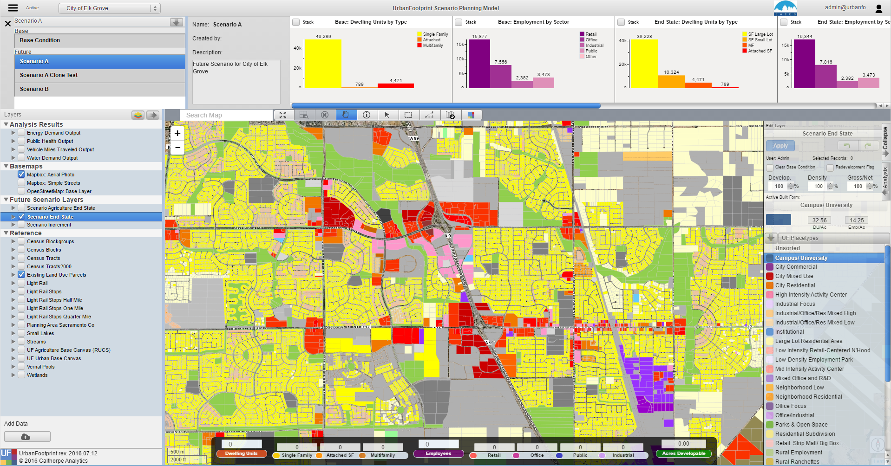
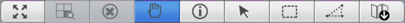
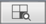
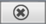
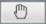
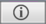
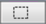
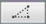

Map Navigation
The user has access to a wide variety of tools to interact with the main map view of UrbanFootprint.

Clicking on an icon on the map tool bar allows the user to zoom and navigate around the map as well as select and identify map features. The user can hover their pointer to get the ‘tool tip’ to identify what button corresponds with each selector.

Zoom to Project Extent: This tool allows the user to zoom the current map to the project extent. The project refers to the project selected in the Active Project dropdown in the header bar.
 Zoom to Selection Extent: This tool allows the user to zoom the current map to the extent of selected features of the Active Layer.
 Clear Selection: This tool clears the selected features of the Active Layer.
 Navigate: This tool allows the user to navigate around the map by clicking and dragging on the map. Tip: The user can hold ‘Shift’ and drag to zoom to a specific extent.
 Identify: This tool is activated when features are selected. The Identify tool opens a moveable summary window where the user can view the attributes of the selected feature.
Point Selector: The point selector selects a single feature on the map.
 Rectangle Selector: The rectangle selector selects the features that intersect with a rectangle formed by the user clicking and dragging across the map.
 Polygon Selector: The polygon selector selects the features that intersects with a user-defined polygon shape formed by the user defining each node of the polygon by clicking on the map. Double clicking will stop forming the polygon selection.
Export Map: The Export Map buttons takes a snapshot of the current map and downloads the map as a jpg to the user's default Download folder.
Tip: Multi-select can be activated by holding down the CTRL/CMD key (Windows/Mac) for the Point , Rectangle , and Polygon Selectors.